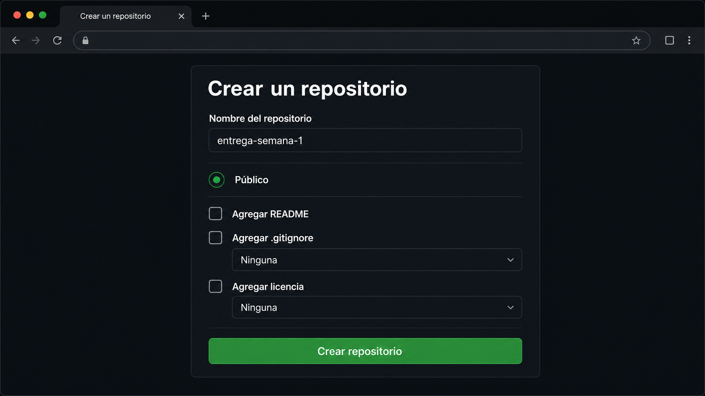
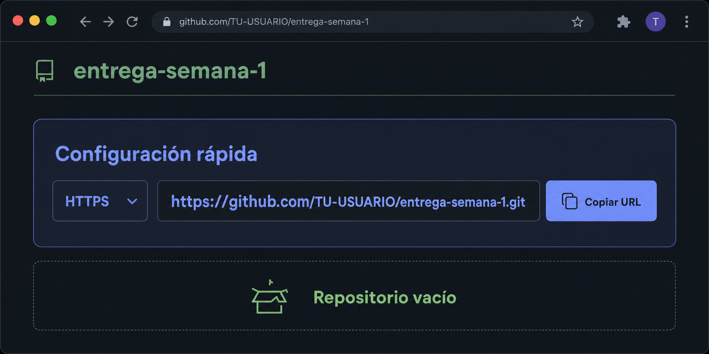
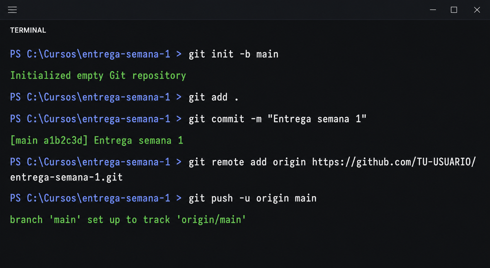
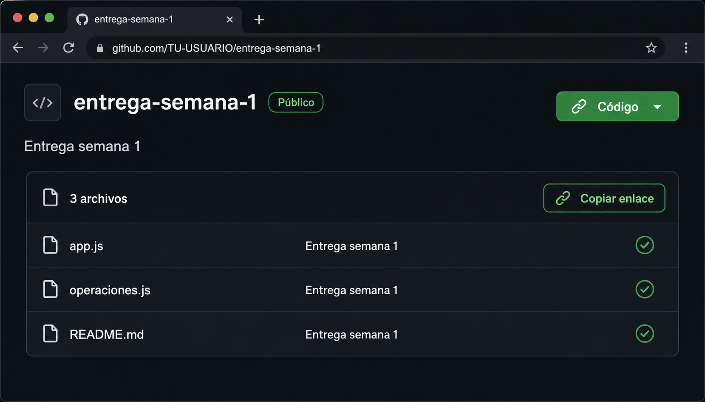

VOCABULARIO DEL RECORRIDO
Cuatro palabras esenciales
La carpeta cuando Git comienza a registrar su historia.
Una versión guardada con un mensaje que explica el cambio.
El repositorio de GitHub conectado con tu computadora.
El envío de commits locales hacia el repositorio remoto.
ANTES DE GUARDAR
Prepará y revisá la carpeta
Abrí la carpeta completa de la entrega en Visual Studio Code. Ejecutá pwd y ls, y luego probá el programa una última vez con node app.js.
Ubicación correcta. La terminal está dentro de la carpeta que querés entregar.
Programa probado. Se ejecuta desde cero y muestra el resultado esperado.
README presente. Explica qué hace y cómo se ejecuta.
Contenido seguro. No contiene contraseñas, tokens ni información innecesaria.
# Entrega semana 1
Programa de consola desarrollado con Node.js.
## Cómo ejecutarlo
```bash
node app.js
```REPOSITORIO LOCAL
Guardá la primera versión
Estos comandos convierten la carpeta actual en un repositorio, revisan y preparan los archivos, y crean el primer commit. Ejecutalos una línea por vez.
git init -b main
git status
git add .
git status
git commit -m "Entrega semana 1"Después de git add ., los archivos aparecen como preparados. El commit final muestra un identificador breve y el mensaje Entrega semana 1.
REPOSITORIO REMOTO
Creá un repositorio vacío en GitHub
En GitHub creá un repositorio llamado entrega-semana-1. Para este recorrido seleccioná visibilidad pública y dejá sin marcar README, .gitignore y licencia.
entrega-semana-1PublicSin archivos
El repositorio debe comenzar vacío. El primer contenido será exactamente el commit local que acabás de crear.
CONEXIÓN HTTPS
Copiá la URL y conectá el remoto
En la configuración rápida de GitHub elegí HTTPS y copiá la URL terminada en .git. No uses la URL del perfil ni selecciones SSH.

Copiá la URL del repositorio. Debe terminar en /entrega-semana-1.git.
Pegá la URL HTTPS
La URL se utiliza solamente dentro de esta página.
Esperando una URL de GitHub.
git remote add origin https://github.com/TU-USUARIO/entrega-semana-1.git
git remote -vgit remote -v muestra dos líneas origin con la misma URL: una para obtener contenido y otra para enviarlo.
PRIMER PUSH
Publicá la rama principal
El primer push envía el commit y conecta la rama main. Puede abrirse el navegador para iniciar sesión y autorizar la operación. No agregues contraseñas dentro de los comandos.
git push -u origin main
Buscá una confirmación relacionada con origin/main. Cuando reaparece el prompt sin error, actualizá GitHub.
EVIDENCIA FINAL
Verificá el repositorio publicado
En GitHub deben aparecer los archivos y el mensaje del último commit. Revisá el README, pero regresá a la página principal antes de copiar el enlace de entrega.

Entregá la URL del repositorio completo. Debe terminar en /entrega-semana-1, no en la dirección de un archivo.
SI ALGO NO FUNCIONA
Usá el mensaje como evidencia
not a git repositoryCarpeta incorrectaUsá pwd y cd; después ejecutá git status.
nothing to commitNo hay cambios preparadosRevisá git status y, si cambió algo, ejecutá git add ..
remote origin already existsYa existe un remotoConsultá git remote -v. Corregilo con git remote set-url origin URL.
src refspec mainFalta commit o ramaConfirmá el commit y ejecutá git branch -M main.
push rejectedHay otra historia remotaCreá otro repositorio vacío. No fuerces el push.
repository not foundURL o cuenta incorrectaCopiá nuevamente la URL HTTPS y verificá la sesión.
CICLO COTIDIANO
Hacé una segunda publicación
Corregí una frase del README y repetí el ciclo. Ya no hace falta git init, agregar el remoto ni usar -u.
git add .Prepará los cambios.
git commit -m "Corrijo el README"Guardá una nueva versión.
git pushSubila a GitHub.
git status
git add .
git commit -m "Corrijo el README"
git pushActualizá GitHub y verificá que el commit más reciente diga Corrijo el README. La misma URL sigue funcionando.
¿Está lista para entregar?
Ya podés copiar y presentar el enlace del repositorio.